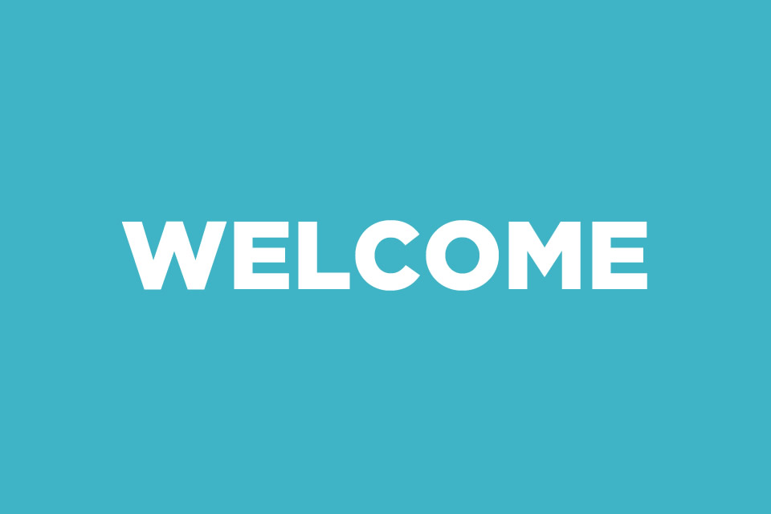

Chapter 3 and Chapter 4 ICT
By Sam Y10.
Home
Chapter 3
Chapter 4
About Page
Welcome To My Webpage

Press on one of the chapter you want to visit about secondary storage media and backing up data (on chapter 3), network device and network security (on chapert 4) in the ICT IGCSE textbook!